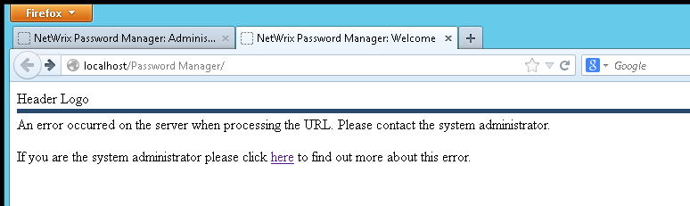
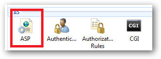
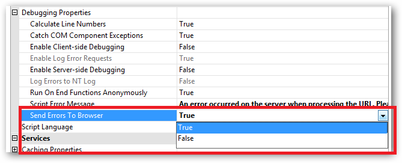

When a user tries to browse to Self-service portal they receive an error message that an
error occurred on the server when processing the URL.

The message is just a user-friendly screen indicating that something went wrong. The most common reason is access permission issues. For example, if some files are unable to be read from disk.
To resolve the issue please make sure that the Password Manger service account is assigned local administrator permissions on the server. If this does not help, turn on IIS error codes to be sent to the browser and disable user-friendly error messages and review the exact error code. To configure sending of errors to browsers:
The message is just a user-friendly screen indicating that something went wrong. The most common reason is access permission issues. For example, if some files are unable to be read from disk.
To resolve the issue please make sure that the Password Manger service account is assigned local administrator permissions on the server. If this does not help, turn on IIS error codes to be sent to the browser and disable user-friendly error messages and review the exact error code. To configure sending of errors to browsers:
- Run IIS, select the web-site Password Manager is installed to.

- Select ASP feature in the central pane
- Expand Debugging Properties and set Send errors to browser to True

To disable user-friendly errors in IE:
http://technet.microsoft.com/en-us/library/cc778248(v=ws.10).aspx
In Firefox:
- Open up a new tab (CTRL+T) or window (CTRL+N).
- Type in de addressbar: about:config.
- In the filterbar type: error and press enter.
- Now set the value of the "browser.xul.error_pages.enabled" to "true".
- Restart Firefox.